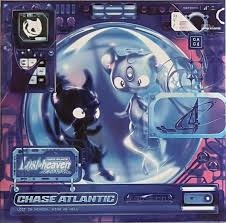

Discografía de Chase Atlantic

Chase Atlantic
Descripción: Un debut marcado por el deseo, la juventud y el lado oscuro de los excesos.
Chase Atlantic: Part Three
Descripción: Explora la fama y la libertad con un sonido más oscuro y experimental.

Lost in Heaven
Descripción: Una reflexión melancólica sobre perderse entre el cielo y el caos interior.